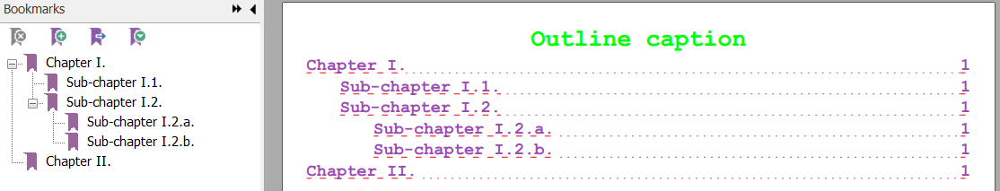

Creating Outline
Brief
The article describes how to create an Outline.
Details
An Outline (a table of content) can be placed anywhere in the document, both at the end or in the middle.
To include the beginning of the Paragraph into the Outline you must set Paragraph's
IsOutline property to true.
An Outline has a multilevel view. Set Paragraph's OutlineLevel to any integer starting from 0 in order for the outline item to be shifted from the left depending on it's level.
To add an Outline to the document, you must create a new Outline element.
You can set
Caption,
LevelSpacing,
Font,
SpacingUnderline,
SpacingUnderlineColor
of the Outline.
All paragraphs in the document, marked as outline and met before the Outline element, will be included into the outline,
no matter if there was one Section or several Sections.
See also:
Example
Creating Outline [hide]
Section section = builder.AddDefaultSection();
// Mark needed paragraphs as outline items:
section.AddParagraph().SetIsOutline().SetOutlineLevel(0).AddText("Chapter I.").SetFont(Font.Courier(16));
section.AddParagraph().SetIsOutline().SetOutlineLevel(1).AddText("Sub-chapter I.1.").SetFont(Font.Courier(16)).SetFontColor(Color.Red);
section.AddParagraph().SetIsOutline().SetOutlineLevel(1).AddText("Sub-chapter I.2.").SetFont(new Font { Name = "Courier", Size = 16f, Color = Color.Red });
section.AddParagraph().SetIsOutline().SetOutlineLevel(2).AddText("Sub-chapter I.2.a.").SetFont(new Font { Name = "Courier", Size = 12f, Color = Color.Green });
section.AddParagraph().SetIsOutline().SetOutlineLevel(2).AddText("Sub-chapter I.2.b.").SetFont(new Font { Name = "Courier", Size = 12f, Color = Color.Green });
section.AddParagraph().SetIsOutline().SetOutlineLevel(0).AddText("Chapter II.").SetFont(Font.Courier(16));
// Add Outline to the document:
builder.AddDefaultSection().AddParagraph().AddContent(() =>
{
var outline = new Outline().SetFontName("Courier-Bold").SetFontSize(14).SetFontColor(Color.FromRgba(0.6, 0.3, 0.7)).SetUnderline(Stroke.Dashed).SetUnderlineColor(Color.Red);
outline.SpacingUnderline = Stroke.Dotted;
outline.SpacingUnderlineColor = Color.FromRgba(0.6, 0.3, 0.7);
outline.LevelSpacing = documentFont.Size.Value * 2F;
outline.Caption = new TextElement().AddContent("Outline caption").SetFont(Font.Courier(20)).SetFontColor(Color.Green).SetBold();
return outline;
});
The code above will generate you the following:
You can achieve the same result using the following code: [show]